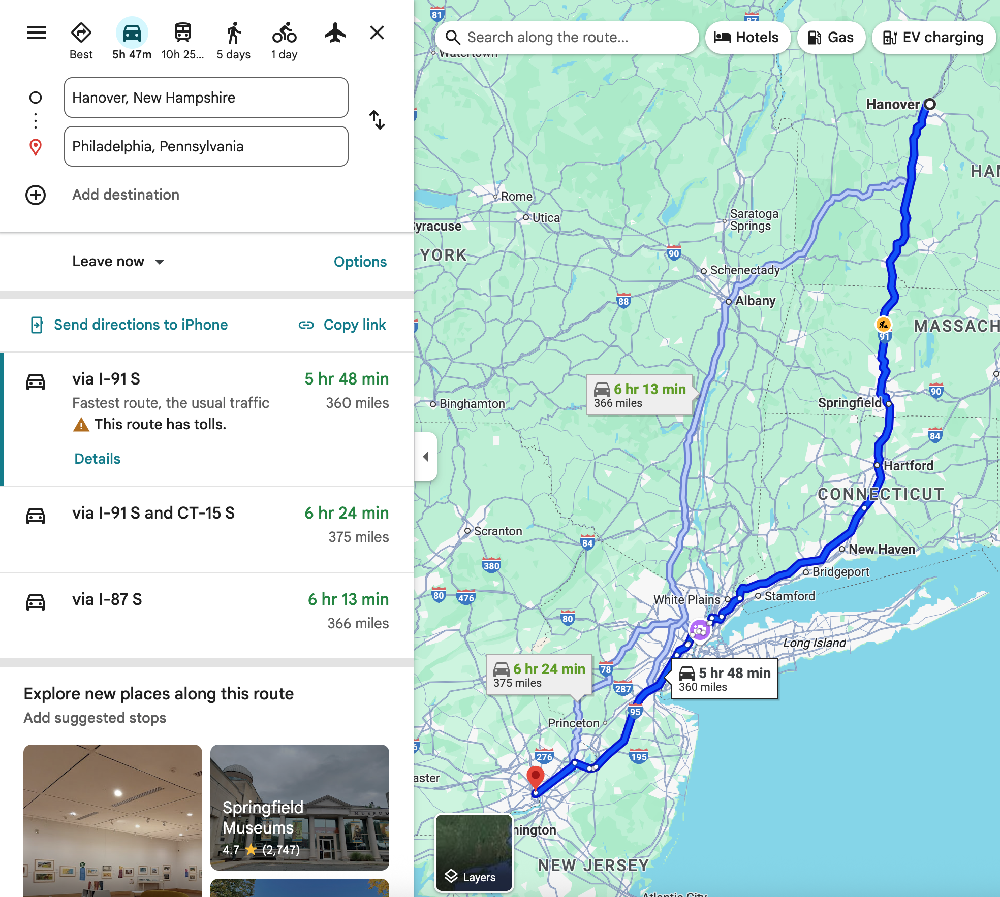

Framing a decision analysis
Lecture 02
September 17, 2025
What does it mean to frame a decision analysis?
How did you make these decisions?
- What did you eat for your last meal?
- What colleges did you apply to?
- How did you choose your PhD program?
https://xkcd.com/1445/
Framing refers to how you structure a decision problem
Framing breakfast decisions
- I want to eat a healthy breakfast every morning that gives me energy
- It needs to be affordable, tasty, low in sugar, etc.,
- Oatmeal with peanut butter and frozen berries, toast with peanut butter and bananas, etc.,
Framing informs how you analyze a decision
Framing breakfast decisions, continued
- I can calculate the costs, macronutrients, etc.,
- I can map out which breakfasts do better/worse on my objectives
Getting theoretical about it
Adapted from Gregory et al. (2012)
Framing is iterative and deliberative
Let’s frame a few decision problems
How should I travel from Hanover to Philadelphia?
How to preserve access to clean water in the growing US Southwest?
Framing wicked climate problems is hard!
Why is framing water management more challenging than travel recommendations?
A few hints from our examples:
- Analyzing travel options was relatively simple
- We got to the bottom of my travel goals quickly
- I have (most of) the decision-making agency and chose my favorite option
Some helpful boundary objects
Conceptual models
Conceptual model for addressing inland flood risk from Helgeson et al. (2024)
Another conceptual model
Unpublished conceptual model for federal funding rules to reduce flood risk
Values-informed mental models

Values mapping on execerpt of the conceptual model from Helgeson et al. (2024)
XLRM diagrams
From Pollack et al. (2025)
Upcoming Schedule
Next week
- Do the 9/22 readings
- Starting Uncertainty module
- We will only meet Monday next week - prioritize your project proposal and schedule office hours as needed
- Let me know if you are testing out the labs and need any help
Works cited
Gregory, R., Failing, L., Harstone, M., Long, G., McDaniels, T., & Ohlson, D. (2012). Structuring environmental management choices. In Structured decision making (pp. 1–20). Chichester, UK: John Wiley & Sons, Ltd. https://doi.org/10.1002/9781444398557.ch1
Helgeson, C., Keller, K., Nicholas, R. E., Srikrishnan, V., Cooper, C., Smithwick, E. A. H., & Tuana, N. (2024). Integrating values to improve the relevance of climate‐risk research. Earths Future, 12(10), e2022EF003025. https://doi.org/10.1029/2022ef003025
Lempert, R. J. (2019). Robust decision making (RDM). In Decision making under deep uncertainty (pp. 23–51). Cham: Springer International Publishing. https://doi.org/10.1007/978-3-030-05252-2\_2
Pollack, A. B., Santamaria-Aguilar, S., Maduwantha, P., Helgeson, C., Wahl, T., & Keller, K. (2025). Funding rules that promote equity in climate adaptation outcomes. Proceedings of the National Academy of Sciences, 122(2), e2418711121. https://doi.org/10.1073/pnas.2418711121